LabVIEW VI Comparison Report
10/28/2026 8:32:44 AM
First VI: C:\workspace-base\Signal Simulator Plug-In\Measurement Logic.viSecond VI: C:\workspace\Signal Simulator Plug-In\Measurement Logic.vi
| Front Panel Overview | ||
|
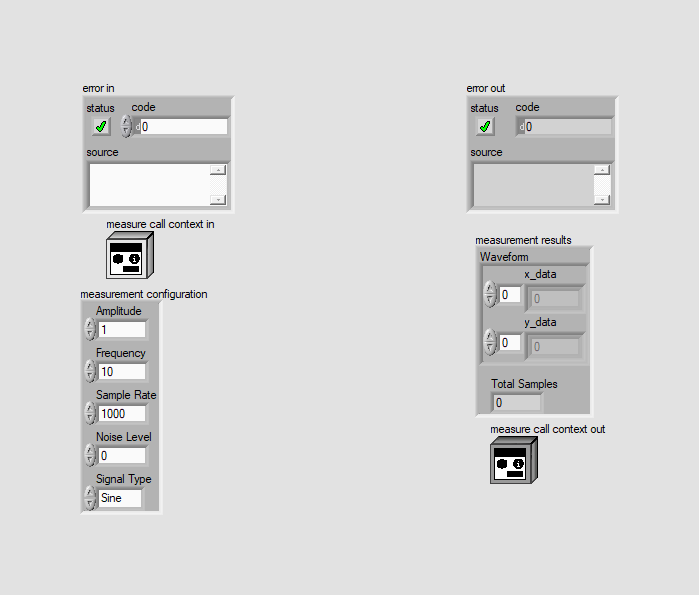 |
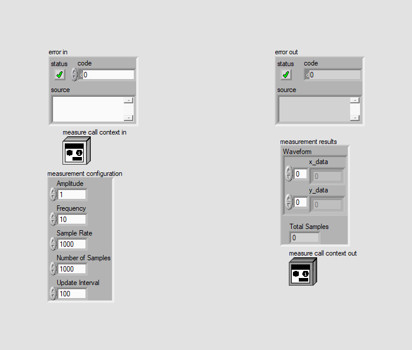 | |
| Block Diagram Overview | ||
|
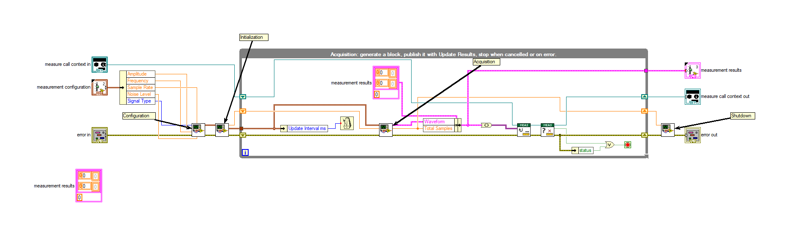 |
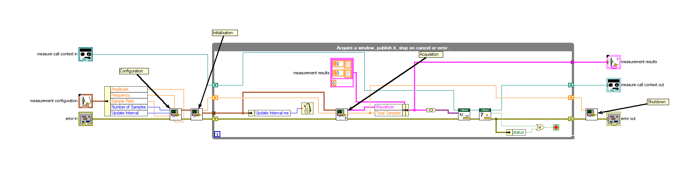 |
- Front Panel
- Front Panel Position/Size
- Block Diagram Functional
- Block Diagram Cosmetic
- VI Attribute
Detailed Information
1. Block Diagram objects
| C:\workspace-base\Signal Simulator Plug-In\Measurement Logic.vi | C:\workspace\Signal Simulator Plug-In\Measurement Logic.vi | |
|
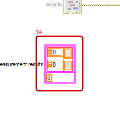 |
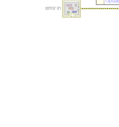 |
- Cluster Constant "measurement results" - deleted at (107,299)
2. Block Diagram objects
| C:\workspace-base\Signal Simulator Plug-In\Measurement Logic.vi | C:\workspace\Signal Simulator Plug-In\Measurement Logic.vi | |
|
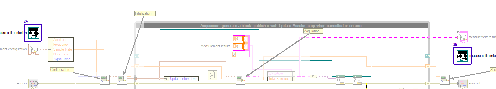 |
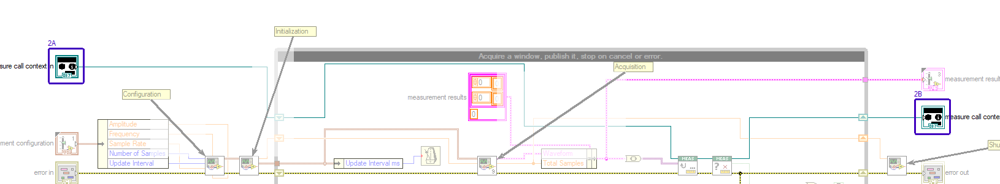 |
- Front Panel Terminal "measure call context in" - moved : changed from "(145,33)" to "(144,33)"
- Front Panel Terminal "measure call context out" - moved : changed from "(1550,109)" to "(1556,116)"
3. Block Diagram objects
| C:\workspace-base\Signal Simulator Plug-In\Measurement Logic.vi | C:\workspace\Signal Simulator Plug-In\Measurement Logic.vi | |
|
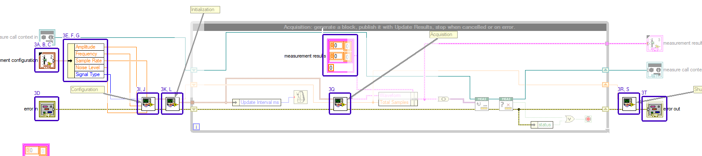 |
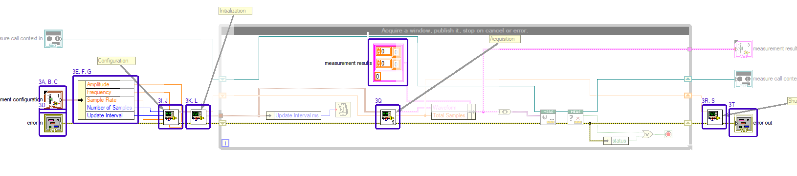 |
- Front Panel Terminal "measurement configuration" - data type name : changed from "measurement configuration" to "measurement configuration"
- Front Panel Terminal "measurement configuration" - numeric representation : changed from "'measurement configuration': typedef 'Signal Simulator Plug-In.lvclass:Measurement Configuration.ctl'\r\ncluster of 5 elements \r\n 'Amplitude': double [64-bit real (~15 digit precision)] \r\n 'Frequency': double [64-bit real (~15 digit precision)] \r\n " to "'measurement configuration': typedef 'Signal Simulator Plug-In.lvclass:Measurement Configuration.ctl'\r\ncluster of 5 elements \r\n 'Amplitude': double [64-bit real (~15 digit precision)] \r\n 'Frequency': double [64-bit real (~15 digit precision)] \r\n "
- Front Panel Terminal "measurement configuration" - moved : changed from "(145,87)" to "(144,159)"
- Front Panel Terminal "error in" - moved : changed from "(145,200)" to "(144,207)"
- Unbundle By Name - moved : changed from "(211,66)" to "(213,138)"
- Unbundle By Name - element replaced : changed from "Noise Level" to "Number of Samples"
- Unbundle By Name - element replaced : changed from "Signal Type" to "Update Interval"
- Label - moved : changed from "(218,165)" to "(253,89)"
- SubVI - VI name
- SubVI "Sine Generator.lvlib:Configure Sine Generator.vi" - moved : changed from "(382,191)" to "(388,198)"
- SubVI - VI name
- SubVI "Sine Generator.lvlib:Initialize Sine Generator.vi" - moved : changed from "(438,191)" to "(444,198)"
- Label - moved : changed from "(495,-21)" to "(501,-14)"
- Cluster Constant "Waveform" - cluster elements replaced/added/deleted : changed from "x_data y_data" to "x_data y_data"
- Cluster Constant "Waveform" - moved : changed from "(3,3)" to "(3,3)"
- Numeric Constant "Total Samples" - moved : changed from "(3,59)" to "(3,59)"
- SubVI - VI name
- SubVI - VI name
- SubVI "Sine Generator.lvlib:Shutdown Sine Generator.vi" - moved : changed from "(1494,191)" to "(1500,198)"
- Front Panel Terminal "error out" - moved : changed from "(1550,200)" to "(1556,207)"
- Label - moved : changed from "(1658,165)" to "(1664,172)"
- wiring changes
4. Block Diagram objects
| C:\workspace-base\Signal Simulator Plug-In\Measurement Logic.vi | C:\workspace\Signal Simulator Plug-In\Measurement Logic.vi | |
|
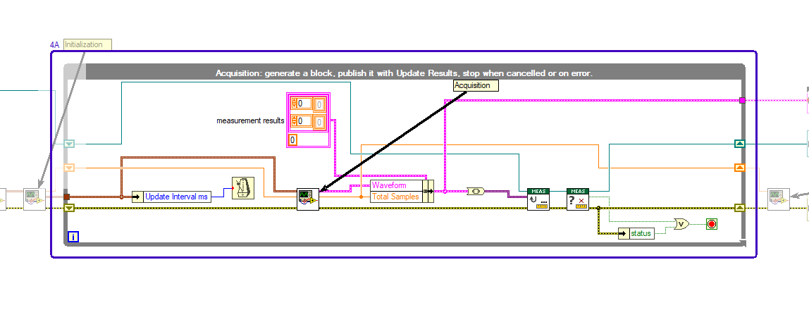 |
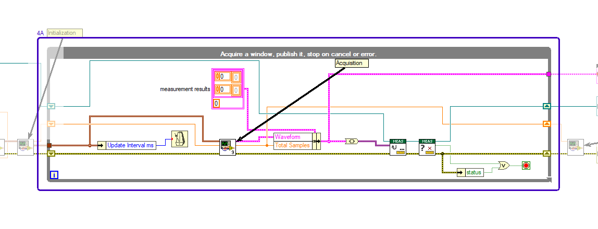 |
- While Loop - moved : changed from "(495,14)" to "(501,21)"
- - text value : changed from "Acquisition: generate a block, publish it with Update Results, stop when cancelled or on error." to "Acquire a window, publish it, stop on cancel or error."
5. Block Diagram objects
| C:\workspace-base\Signal Simulator Plug-In\Measurement Logic.vi | C:\workspace\Signal Simulator Plug-In\Measurement Logic.vi | |
|
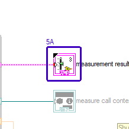 |

|
- Front Panel Terminal "measurement results" - moved : changed from "(1550,47)" to "(1556,54)"
6. Front Panel - Type Definition
| C:\workspace-base\Signal Simulator Plug-In\Measurement Logic.vi | C:\workspace\Signal Simulator Plug-In\Measurement Logic.vi | |
|
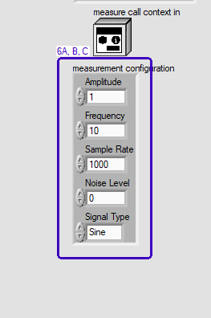 |
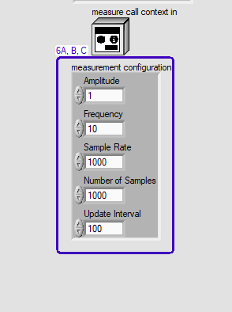 |
- Numeric - format and precision
- Type Definition "measurement configuration" - resized : changed from "83*216" to "114*214"
- Cluster - resized : changed from "83*216" to "114*214"
7. VI Attribute - Documentation (VI Properties)
- description text : changed from "Contains the core logic for executing the measurement. Configures and initializes the signal generator, then continuously acquires blocks of synthetic waveform data and publishes each block to the client with Update Results until the client cancels or an error occurs. The generator is shut down and the last block is returned as the final measurement result." to "Contains the core logic for executing the measurement. Configures and initializes the sine generator, then continuously acquires a window of sine wave data and publishes it to the client with Update Results every update interval until the client cancels or an error occurs. The generator is then shut down and the last window is returned as the final measurement result."